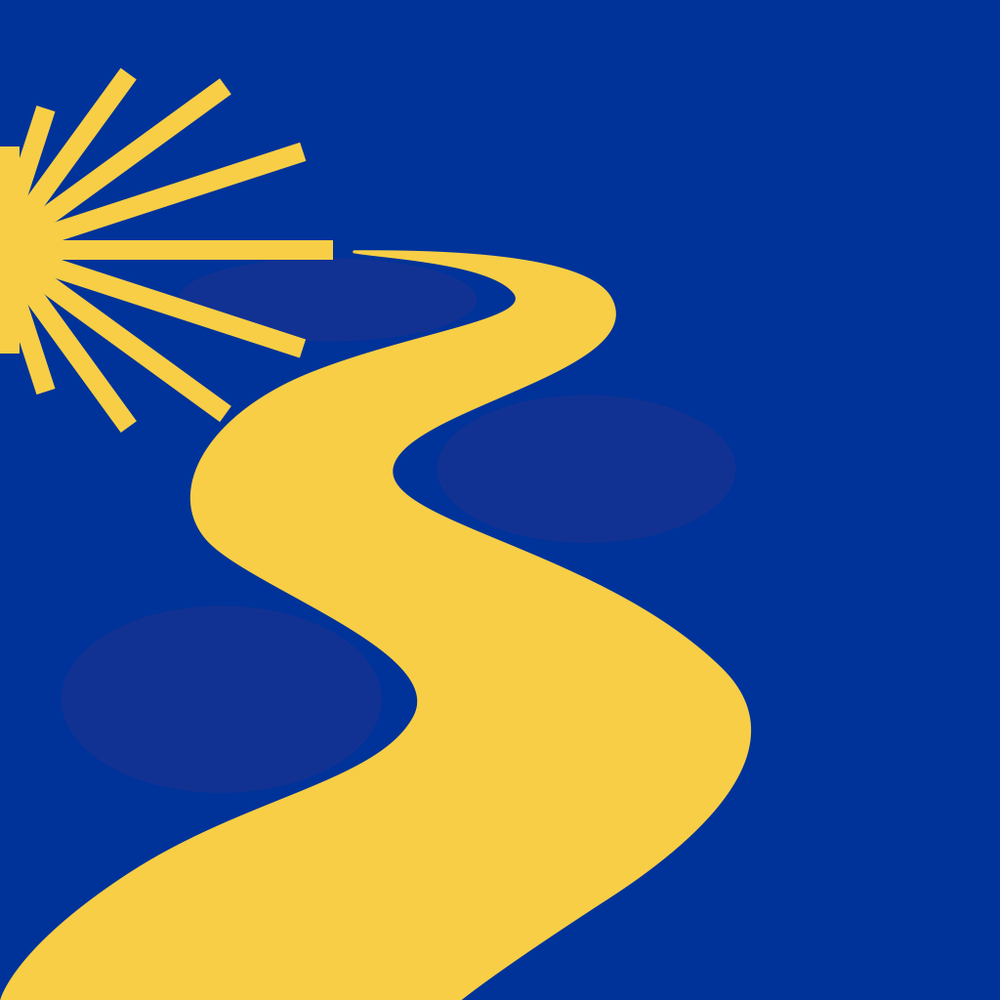

¥€$ Expense Tracker
Discover ¥€$, the expense tracker that is as unique as you are. With this free version, you can create up to five categories with personalized names, budgets (optional), colors, and emojis. Tracking your expenses with ¥€$ is effortless. Simply enter your current expenses with just a few taps and start saving money. To edit or delete a category, press and hold its emoji button for two seconds. At the end of each month, you'll find an overview of your spending in the "Months" section.
¥€$ Expense Tracker
Discover ¥€$, the expense tracker that is as unique as you are. With this free version, you can create up to five categories with personalized names, budgets (optional), colors, and emojis. Tracking your expenses with ¥€$ is effortless. Simply enter your current expenses with just a few taps and start saving money. To edit or delete a category, press and hold its emoji button for two seconds. At the end of each month, you'll find an overview of your spending in the "Months" section.
FlagSpot
Wallnote reimagines your iPhone's wallpaper as a canvas for your most important notes. Select any photo, style it with custom text and background, then add your personal reminders. A quick screenshot transforms it into your wallpaper, ensuring your notes are always just a glance away. Embrace Wallnote and make your reminders personal, stylish, and impossible to miss.

Wallnote
Wallnote reimagines your iPhone's wallpaper as a canvas for your most important notes. Select any photo, style it with custom text and background, then add your personal reminders. A quick screenshot transforms it into your wallpaper, ensuring your notes are always just a glance away. Embrace Wallnote and make your reminders personal, stylish, and impossible to miss.
CaminoQuest
Walk the Camino de Santiago wherever you are.
In the App Store in summer 2025.
If you enjoy using ¥€$, we would greatly appreciate it if you could take a moment to rate the app in the App Store. Your
feedback is invaluable as we continually strive to enhance the user experience. For any comments, questions, or suggestions,
please don't hesitate to email us at:
hello@nayaca.com